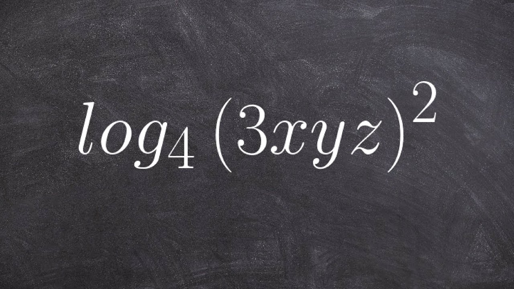

This problem was to find out real roots of an equation in relation to another equation. The key to this question was to think of the graph as a transformation of the other. Doing this made the answer become very clear.
Solving By Squaring

This problem is an example of a proof however it makes some errors. I avoid these errors by using logarithms to find solutions to the equation.